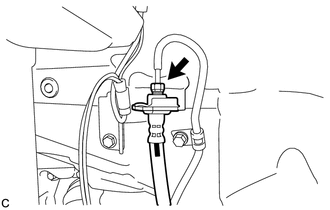
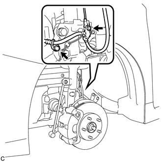

RM3140CG
_54
制动
_023992
制动器（前轮）
_0116086
前轮制动器挠性软管
A
制动器（前轮） 前轮制动器挠性软管 安装
注意/小心/提示
- 备注：
- ·
因为左侧和右侧前挠性软管不能互换，所以在安装前挠性软管时需确认零件号。
·如果要重新使用前挠性软管，则检查断开各软管时所做的识别标记后，连接软管。
- 提示：
- ·
右侧操作程序与左侧相同。
·下面程序适用于左侧。
程序

 1.安装前挠性软管
1.安装前挠性软管
- 备注：
-
安装前挠性软管时，使挠性软管扭曲最小。
a.

1.854,1.052 2.448,1.052
true
1.646,1.552 2.438,1.552
true
2.5,0.99 2.667,1.146
0.167,0.156
10
*1
2.49,1.479 2.656,1.635
0.167,0.156
10
*a
| *1 | 卡子 |
| *a | 识别标记 |
将新卡子安装到前挠性软管上。
- 备注：
- ·
安装卡子至最紧位置。
·安装前挠性软管时，使识别标记朝向车辆外侧。
b.
用扳手固定前挠性软管的同时，使用连接螺母扳手将制动管路连接至前挠性软管。
- 扭矩：
- 15.2 N*m (155 kgf*cm, 11 ft.*lbf)
- 备注：
- ·
不要扭曲或损坏制动管路。
·不要让任何异物（如污物或灰尘）从连接部位进入制动管路。
·利用公式计算连接螺母扳手和扭矩扳手配合使用时的特定扭矩值。
单击此处 概述>导言>维修说明>注意事项201406,999999,_V1,_023977,_0116736,RM100000000DB82,
c.

1.771,0.49 0.719,0.49
true
1.885,0.792 2.646,0.792
true
1.479,1.104 1.688,1.302
0.208,0.198
10
true
B
2.063,0.354 2.354,0.563
0.292,0.208
10
false
A
0.542,0.406 0.781,0.625
0.24,0.219
10
false
*1
2.688,0.719 2.979,0.969
0.292,0.25
10
false
*2
| *1 | 前轮转速传感器支架 |
| *2 | 前挠性软管支架 |
用螺栓 (B) 将前挠性软管安装到转向节上。
- 扭矩：
- 29 N*m (296 kgf*cm, 21 ft.*lbf)
d.
用螺栓 (A) 将前挠性软管支架和前轮转速传感器支架安装到减振器支架上。
- 扭矩：
- 29 N*m (296 kgf*cm, 21 ft.*lbf)
- 备注：
-
首先安装前挠性软管支架，然后安装前轮转速传感器支架。
e.
用新接头螺栓和新衬垫将前挠性软管连接到前盘式制动器制动缸总成上。
- 扭矩：
- 29 N*m (296 kgf*cm, 21 ft.*lbf)
- 备注：
-
将前挠性软管锁止器牢固地安装到前盘式制动器制动缸总成的锁孔中。